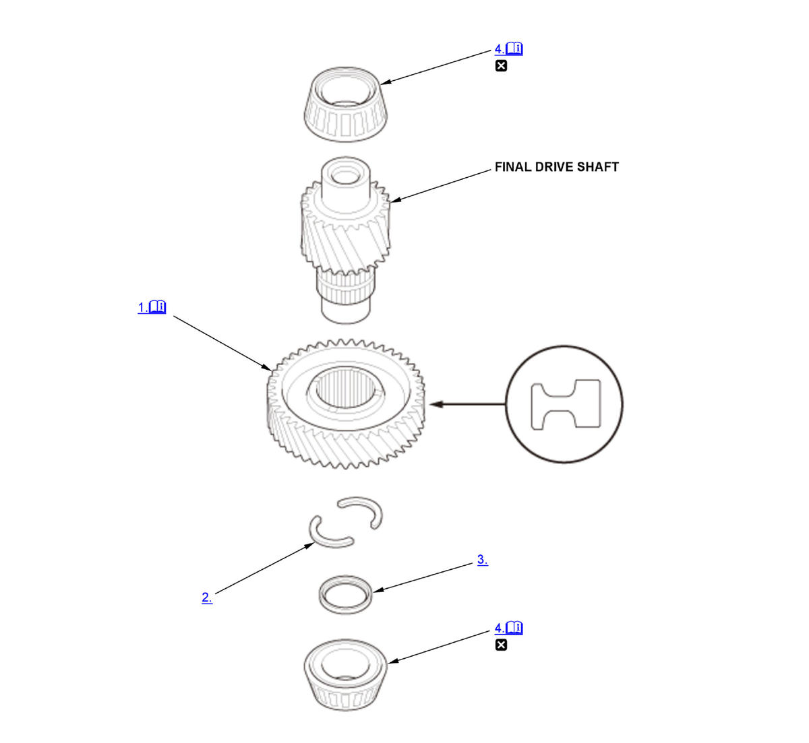

Final Drive Shaft Disassembly and Reassembly (K20C2 (CVT)): Reassembly: Procedure
NOTE:
Numbered call-outs in figure pertain to list numbers in following procedure.

Courtesy of HONDA, U.S.A., INC. |
Detailed information, notes and precautions |
 |
Replace |
- Secondary Driven Gear - Install
1. Install the secondary driven gear (A) until it bottoms in the direction shown using a press. - 29 mm Cotter - Install
- Cotter Retainer - Install
- Final Drive Shaft Bearing - Install
1. Install the final drive shaft bearings (A) until they bottom using the 15 x 135L driver handle, the 45 mm attachment, and a press.